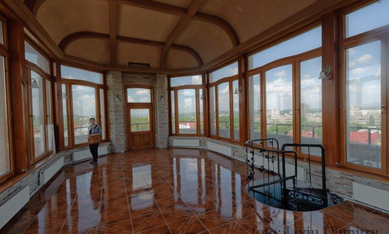
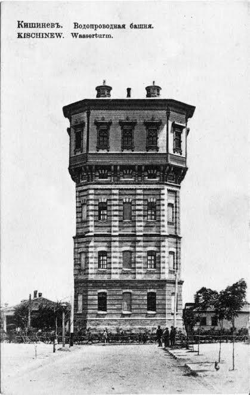
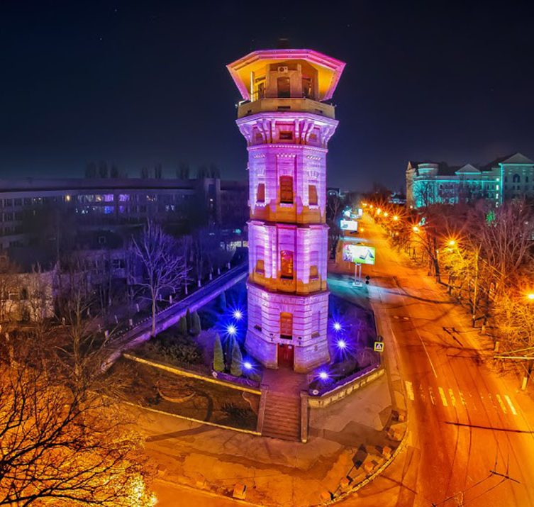
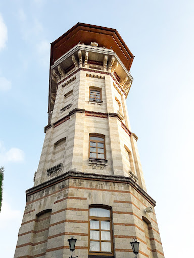

Istoric
Turnul de Apă din Chișinău, construit în secolul XIX, a asigurat alimentarea orașului cu apă potabilă. Construcția din piatră și cărămidă, simbolizează arhitectura clasică industrială și a rămas un punct de referință al orașului până în prezent.
După modernizări, turnul a devenit un monument istoric. În prezent, turnul este și muzeu, oferind vizitatorilor o privire asupra istoriei orașului și o vedere panoramică unică.
Galerie Foto
   Fapte interesante
Turnul a supraviețuit bombardamentelor din al Doilea Război Mondial.
Astăzi, turnul este un muzeu ce prezintă istoria Chișinăului.
Structura originală din cărămidă a rămas intactă din secolul XIX.

Turnul a alimentat orașul cu apă timp de decenii.
Vizitați Turnul
Descoperiți Turnul de Apă din Chișinău și bucurați-vă de o lecție de istorie și arhitectură unică în oraș!
Mai multe detalii